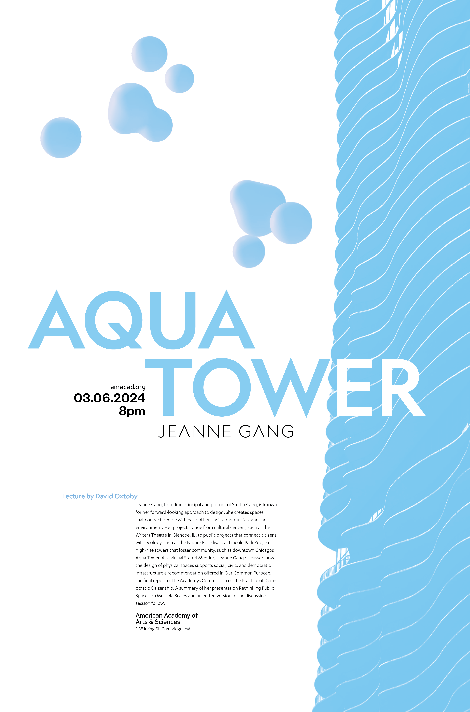
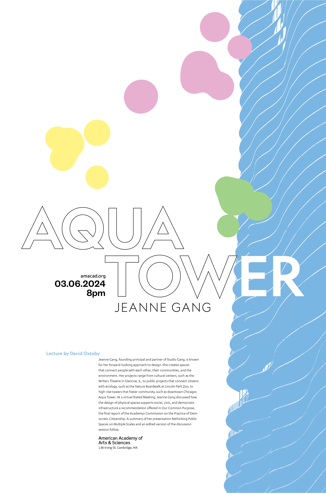
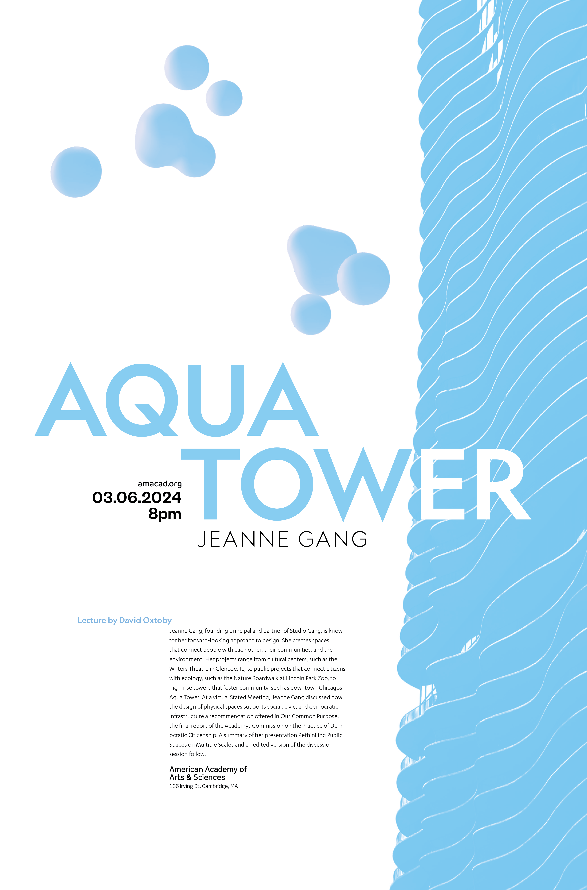
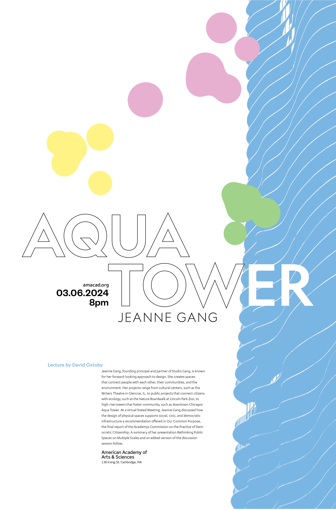

For this project, we were to make a poster for a hypothetical architect talk based on a building of our choosing. I chose Jeanne Gang's Aqua Tower, and took pictures of its beautiful ghost-like sillhoute and the waving geometry along its side.
I wanted to make something that could envoke the same feeling of quiet elegance the building gave me, while retaining the image of it against the pale blue sky.
My original drafts include a type test for the two posters, a version in black and white, and two in color where I was playing with where the blue would go- although it seems obvious now, I originally wanted to invoke the open feeling of sky with white space, but found that a monochromatic image where everything was blue made it feel much more elegant and cohesive.
Finally, I updated the photos to new ones showcasing the intricacy of the geometry on the side of the building- the one on the left is my favorite picture of the entire collection.
 


